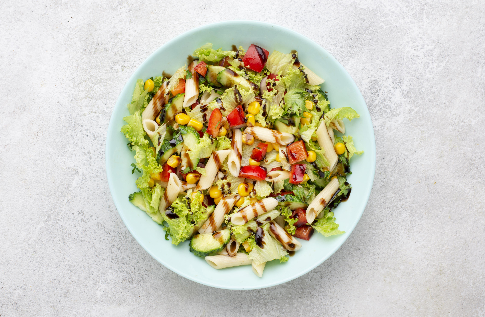

Salada Caeser

A salada clássica que todo mundo já viu em algum cardápio, feita com alface crocante, croutons e um molho super cremoso à base de queijo parmesão, alho e limão.
VER RECEITASalada Mediterrânea

A salada mediterrânea destaca-se pelo uso de ingredientes simples, frescos e nutritivos, sendo rica em fibras, gorduras saudáveis e antioxidante.
VER RECEITASalada Clássica

A salada clássica da casa, possui grande variedade de ingredientes e modos de preparo, ideal para qualquer hora.
VER RECEITASalada Caprese

A Salada Caprese é uma clássica receita italiana que destaca a simplicidade e frescor dos ingredientes, composta por fatias de tomate, mussarela de búfala e folhas de manjericão.
VER RECEITASalada de Big Mac

Essa salada oferece o sabor característico do Big Mac com uma abordagem mais saudável, reduzindo carboidratos e calorias ao eliminar o pão VER RECEITA
Salada Oriental

A Salada Oriental é uma opção leve e refrescante, que combina ingredientes típicos da culinária asiática.
VER RECEITA